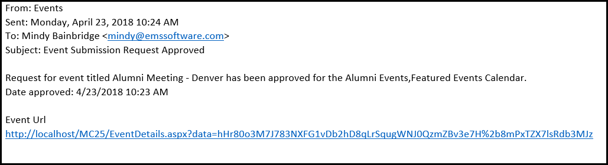

Approving Pending Event Requests
- Navigate to the Admin Panel > Events & Special Dates > Manage Events. The Manage Events page opens. See Also: Types of Master Calendar Users.
- Optionally, filter the pending events that you are approving.
- Select the pending events that you are approving. To select all pending events on the currently opened page for approval in a single step, select the column heading, Title. If you have multiple pages of events to approve, you must repeat this entire process on each page.
Manage Events Page

- Under Actions, click Approve. A message opens asking you if you are sure that you want to approve all selected events.
- Click OK in the message. A message opens indicating that all selected events were approved.
- Click OK in the message. The events are approved and are removed from the Pending Events list. For each approved event, an email is automatically generated and sent to the event requestor informing them that the Calendar Manager has approved their request.
Example of Approved Event Request Email

TIP: To have Master Calendar automatically generate and send emails indicating the event status (approved or rejected), your site administrator must have set the default System Configuration settings for email: name of sender, SMTP server, and address of sender. If your system is not automatically sending and generating emails after you approve or reject an event request, work with your site administrator to ensure that the necessary default settings have been specified.